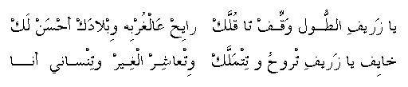

ya zareef eT-Tool waqqif ta qullak
raayiH 'al-ghorbeh wiblaadak aHsanlak
khaayif ya zareef itrooH o titmallak
wit'aashir el-gheir o tinsaany anaa
O, zareef eT-Tool* stop so I can tell you
You are going abroad and your country is better for you
I am afraid you will get established there
And find someone else and forget me
* One of an elegant height.
Go
back to Palestinian Songs Page
Go back
to Palestinian Folklore Page